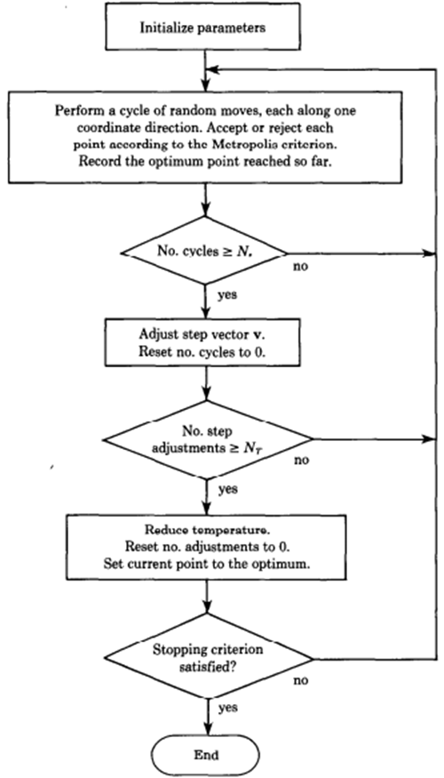

8.3: Simulated Annealing
Simulated annealing is an
optimization algorithm whose objective is to find global optima. It is inspired
by the process of annealing performed to toughen metals. For example, a piece
of steel is repeatedly heated at extremely high temperatures and then slowly
cooled. This process of heating and slow cooling helps molecules in the steel
to improve and reorganize their position, thereby strengthening the steel. It
is an improvement on the hill climbing algorithm, which is good at finding
local optima, but performs poorly on global optima.
The algorithm is executed for
several iterations as specified by the user. The temperature for annealing is
set by the user before the start of the algorithm. For the first iteration, a
random subset of features is drawn and its performance is measured for the dataset.
The given feature set is perturbed by randomly removing and adding new features
to the feature set. We can specify the percentage of features that can be
perturbed. Usually, this percentage is kept between 1 and 5. After the features
are perturbed, the new perturbed features are used for evaluating the dataset.
We then compare model performance between features drawn at the beginning of
iteration and perturbed features. If the new subset is better than the initial
subset, we replace the initial subset with the better subset. If on the other
hand, the perturbed subset performs worse than the initial subset, we calculate
an acceptance or rejection probability, which uses both the model metric as
well as temperature. The calculated probability is compared against a random
probability. For the regression problem, if the random probability is less than
accept reject probability, we take the worse-performing perturbed feature set.
For classification problems, if the random probability is more than accept reject
probability, we take the worse-performing perturbed feature set. The new
feature set thus generated is used for the next iteration, and the temperature
is cooled based on a predefined alpha value. One thing to note about perturbing
is that in an iteration, we can perturb more than once.
Simulated annealing tries to improve
the feature set randomly generated in the first iteration. In some cases, the
random feature set generated could be very close to global minima or global
maxima. Hence, for the same feature set, in some cases, the extent of
improvement obtained through simulated annealing could be worse in comparison
to some other instances. Apart from the hyperparameters of the algorithm, the
random feature set generated in the first iteration also has an impact. This is
one of the limitations of simulated annealing, as it is beyond the control of
the user.
After completion of simulated
annealing, we should test the resultant feature set on external test and
validation data. Figure 8.3.1 below is a flowchart of the simulated annealing
algorithm [1]

Figure 8.3.1: Simulated Annealing
algorithm flowchart
We can use the function SimulatedAnnealing
in the feature selection object fsObj
for performing simulated annealing. Below is how the syntax will look like.
best_columns = fsObj.SimulatedAnnealing(temperature = 1500,
iterations = 25,
n_perturb =
75,
run_time=1200,
n_features_percent_perturb=1,
alpha=0.9)
In this syntax example, we have set
a high temperature of 1500. We have executed simulated annealing for 25
iterations. Within each iteration, we have perturbed 1 percent of features. We
have allowed perturbation to happen for 75 times in each iteration. Execution
time limit is set for 1200 minutes. We have set alpha as 0.9.